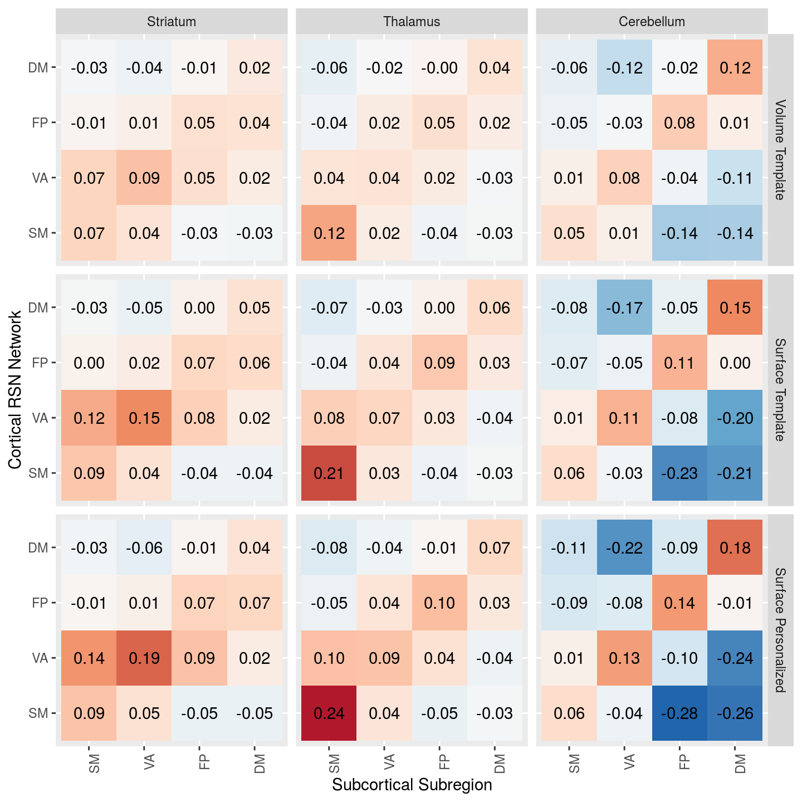

Chapter 6 Is PINT "focusing" cortical subcortical connectivity
table1 <- results_pheno %>%
group_by(vertex_type, YeoNet, subcort_ROI, subcort_NET) %>%
summarise(n = n(),
Mean = mean(rval),
SD = sd(rval)) ## `summarise()` regrouping output by 'vertex_type', 'YeoNet', 'subcort_ROI' (override with `.groups` argument)ggplot(table1, aes(y = YeoNet, x = subcort_NET, fill = Mean)) +
geom_tile() +
scale_fill_distiller(breaks = c(-0.5,0.5), type = "div", palette = 5) +
theme(axis.text.x = element_text(angle = 90, hjust = 1)) +
facet_grid(subcort_ROI~vertex_type)  functions to help re-annotated the function axes
functions to help re-annotated the function axes
#' sets some the main variables to factors to more descriptive labels
add_corrtype_and_subcortROI_columns <- function(data) {
result <- data %>%
mutate(corrtype = factor(vertex_type, levels = c('tvolume','tvertex','pvertex'),
labels = c("Volume Template", "Surface Template", "Surface Personalized")),
subcortROI = factor(subcort_ROI,
levels = c("striatum", "thalamus", "cerebellum"),
labels = c("Striatum", "Thalamus", "Cerebellum")))
return(result)
}
#'drop VI DA and LI network from resutls
drop_VI_DA_LI <- function(data) {
result <- data %>%
filter(subcort_NET != "VI",
subcort_NET != "DA",
subcort_NET != "LI",
YeoNet != "VI",
YeoNet != "DA")
return(result)
}table1 %>%
drop_VI_DA_LI() %>%
add_corrtype_and_subcortROI_columns() %>%
ggplot(aes(y = YeoNet, x = subcort_NET, fill = Mean)) +
geom_tile() +
geom_text(aes(label = sprintf('%3.2f',Mean))) +
scale_fill_distiller(breaks = c(-0.5,0.5), type = "div", palette = 5) +
theme(axis.text.x = element_text(angle = 90, hjust = 1)) +
facet_grid(corrtype~subcortROI) +
labs(y = "Cortical RSN Network", x = "Subcortical Subregion")
table1 <- results_pheno %>%
group_by(vertex_type, YeoNet, hemisphere, subcort_ROI, subcort_NET, subcort_hemi) %>%
summarise(n = n(),
Mean = mean(rval),
SD = sd(rval)) ## `summarise()` regrouping output by 'vertex_type', 'YeoNet', 'hemisphere', 'subcort_ROI', 'subcort_NET' (override with `.groups` argument)table1 %>%
drop_VI_DA_LI() %>%
add_corrtype_and_subcortROI_columns() %>%
ggplot(aes(y = YeoNet, x = subcort_NET, fill = Mean)) +
geom_tile() +
geom_text(aes(label = sprintf('%3.2f',Mean))) +
scale_fill_distiller(breaks = c(-0.5,0.5), type = "div", palette = 5) +
theme(axis.text.x = element_text(angle = 90, hjust = 1)) +
facet_grid(subcortROI*subcort_hemi~corrtype*hemisphere) +
labs(y = "Cortical RSN Network", x = "Subcortical Subregion") 
We see in the above figure that the Yeo 7 Network connectivity strongly shows the expected pattern in the cerebeullum.
Lower evidence is seen in the striatum and thalamus, although there is a faint increase across the diagonal for the SM, VA and DM especially
net_means <- results_pheno %>%
drop_VI_DA_LI() %>%
group_by(YeoNet, subcort_ROI, subcort_NET, conn_type, subject, dataset, vertex_type) %>%
summarise(netmean = mean(rval)) %>%
ungroup() ## `summarise()` regrouping output by 'YeoNet', 'subcort_ROI', 'subcort_NET', 'conn_type', 'subject', 'dataset' (override with `.groups` argument)subject_focus <- net_means %>%
drop_VI_DA_LI() %>%
group_by(subject, dataset, subcort_ROI, YeoNet, vertex_type, conn_type) %>%
summarise(nets_type_avg = mean(netmean)) %>%
spread(conn_type, nets_type_avg) # %>%## `summarise()` regrouping output by 'subject', 'dataset', 'subcort_ROI', 'YeoNet', 'vertex_type' (override with `.groups` argument) # ungroup() %>%
# mutate(focus_effect = same_net - diff_net)subject_focus %>%
ungroup() %>%
group_by(subcort_ROI, YeoNet, vertex_type) %>%
do(tidy(t.test(.$same_net, .$diff_net, paired = TRUE))) %>%
mutate(cohenD = statistic/sqrt(parameter + 1)) %>%
kable()| subcort_ROI | YeoNet | vertex_type | estimate | statistic | p.value | parameter | conf.low | conf.high | method | alternative | cohenD |
|---|---|---|---|---|---|---|---|---|---|---|---|
| cerebellum | SM | pvertex | 0.2509370 | 32.79637 | 0 | 405 | 0.2358956 | 0.2659783 | Paired t-test | two.sided | 1.6276567 |
| cerebellum | SM | tvertex | 0.2169637 | 33.29947 | 0 | 405 | 0.2041552 | 0.2297722 | Paired t-test | two.sided | 1.6526250 |
| cerebellum | SM | tvolume | 0.1449559 | 30.41125 | 0 | 405 | 0.1355857 | 0.1543261 | Paired t-test | two.sided | 1.5092851 |
| cerebellum | VA | pvertex | 0.2439763 | 31.09638 | 0 | 405 | 0.2285527 | 0.2593999 | Paired t-test | two.sided | 1.5432875 |
| cerebellum | VA | tvertex | 0.2009076 | 31.79134 | 0 | 405 | 0.1884844 | 0.2133309 | Paired t-test | two.sided | 1.5777775 |
| cerebellum | VA | tvolume | 0.1241032 | 29.82652 | 0 | 405 | 0.1159237 | 0.1322827 | Paired t-test | two.sided | 1.4802655 |
| cerebellum | FP | pvertex | 0.1951463 | 35.93027 | 0 | 405 | 0.1844693 | 0.2058233 | Paired t-test | two.sided | 1.7831891 |
| cerebellum | FP | tvertex | 0.1484289 | 36.99876 | 0 | 405 | 0.1405425 | 0.1563153 | Paired t-test | two.sided | 1.8362175 |
| cerebellum | FP | tvolume | 0.1050624 | 33.83044 | 0 | 405 | 0.0989574 | 0.1111674 | Paired t-test | two.sided | 1.6789766 |
| cerebellum | DM | pvertex | 0.3156742 | 37.62450 | 0 | 405 | 0.2991806 | 0.3321678 | Paired t-test | two.sided | 1.8672725 |
| cerebellum | DM | tvertex | 0.2535391 | 37.36094 | 0 | 405 | 0.2401985 | 0.2668797 | Paired t-test | two.sided | 1.8541922 |
| cerebellum | DM | tvolume | 0.1826252 | 35.64842 | 0 | 405 | 0.1725543 | 0.1926961 | Paired t-test | two.sided | 1.7692013 |
| striatum | SM | pvertex | 0.1109963 | 16.03850 | 0 | 405 | 0.0973914 | 0.1246011 | Paired t-test | two.sided | 0.7959773 |
| striatum | SM | tvertex | 0.1023066 | 17.77211 | 0 | 405 | 0.0909901 | 0.1136232 | Paired t-test | two.sided | 0.8820152 |
| striatum | SM | tvolume | 0.0772217 | 16.51277 | 0 | 405 | 0.0680285 | 0.0864149 | Paired t-test | two.sided | 0.8195149 |
| striatum | VA | pvertex | 0.1015677 | 24.03184 | 0 | 405 | 0.0932593 | 0.1098761 | Paired t-test | two.sided | 1.1926804 |
| striatum | VA | tvertex | 0.0812200 | 24.03456 | 0 | 405 | 0.0745768 | 0.0878631 | Paired t-test | two.sided | 1.1928150 |
| striatum | VA | tvolume | 0.0468493 | 18.40508 | 0 | 405 | 0.0418453 | 0.0518532 | Paired t-test | two.sided | 0.9134290 |
| striatum | FP | pvertex | 0.0510051 | 13.22495 | 0 | 405 | 0.0434234 | 0.0585868 | Paired t-test | two.sided | 0.6563435 |
| striatum | FP | tvertex | 0.0430208 | 14.93332 | 0 | 405 | 0.0373575 | 0.0486841 | Paired t-test | two.sided | 0.7411284 |
| striatum | FP | tvolume | 0.0342699 | 14.65305 | 0 | 405 | 0.0296723 | 0.0388675 | Paired t-test | two.sided | 0.7272189 |
| striatum | DM | pvertex | 0.0758314 | 12.57094 | 0 | 405 | 0.0639729 | 0.0876898 | Paired t-test | two.sided | 0.6238855 |
| striatum | DM | tvertex | 0.0687229 | 15.15420 | 0 | 405 | 0.0598080 | 0.0776378 | Paired t-test | two.sided | 0.7520903 |
| striatum | DM | tvolume | 0.0500223 | 12.02385 | 0 | 405 | 0.0418439 | 0.0582007 | Paired t-test | two.sided | 0.5967339 |
| thalamus | SM | pvertex | 0.2544642 | 28.19933 | 0 | 405 | 0.2367249 | 0.2722035 | Paired t-test | two.sided | 1.3995093 |
| thalamus | SM | tvertex | 0.2204035 | 29.09559 | 0 | 405 | 0.2055119 | 0.2352950 | Paired t-test | two.sided | 1.4439901 |
| thalamus | SM | tvolume | 0.1408673 | 27.37653 | 0 | 405 | 0.1307520 | 0.1509826 | Paired t-test | two.sided | 1.3586746 |
| thalamus | VA | pvertex | 0.0608091 | 13.53099 | 0 | 405 | 0.0519745 | 0.0696436 | Paired t-test | two.sided | 0.6715316 |
| thalamus | VA | tvertex | 0.0470749 | 13.17317 | 0 | 405 | 0.0400499 | 0.0540999 | Paired t-test | two.sided | 0.6537736 |
| thalamus | VA | tvolume | 0.0319912 | 12.36880 | 0 | 405 | 0.0269067 | 0.0370757 | Paired t-test | two.sided | 0.6138533 |
| thalamus | FP | pvertex | 0.0928243 | 19.34700 | 0 | 405 | 0.0833925 | 0.1022561 | Paired t-test | two.sided | 0.9601755 |
| thalamus | FP | tvertex | 0.0797281 | 21.65148 | 0 | 405 | 0.0724892 | 0.0869669 | Paired t-test | two.sided | 1.0745447 |
| thalamus | FP | tvolume | 0.0532868 | 18.38452 | 0 | 405 | 0.0475889 | 0.0589847 | Paired t-test | two.sided | 0.9124085 |
| thalamus | DM | pvertex | 0.1120022 | 19.13990 | 0 | 405 | 0.1004986 | 0.1235058 | Paired t-test | two.sided | 0.9498971 |
| thalamus | DM | tvertex | 0.0956365 | 21.25110 | 0 | 405 | 0.0867897 | 0.1044834 | Paired t-test | two.sided | 1.0546743 |
| thalamus | DM | tvolume | 0.0700509 | 17.89502 | 0 | 405 | 0.0623555 | 0.0777463 | Paired t-test | two.sided | 0.8881148 |
YeoNet7 <- tribble(
~network, ~hexcode,
"VI", "#781286",
"SM", "#4682B4",
"DA", "#00760E",
"VA", "#C43AFA",
"FP", "#E69422",
"DM", "#CD3E3A",
"LI", "#dcf8a4")
#' Left section of the raincload plots used in sub-cortical cortical change reporting
samediff_subcort_raincloud <- function(data, this_subcort_ROI, this_YeoNet, no_ticks = TRUE) {
eff_size_df <- data %>%
ungroup() %>%
mutate(corrtype = factor(vertex_type, levels = c('pvertex', 'tvertex', 'tvolume'),
labels = c("Surface Personalized", "Surface Template", "Volume Template"))) %>%
filter(subcort_ROI == this_subcort_ROI, YeoNet == this_YeoNet) %>%
group_by(subcort_ROI, YeoNet, corrtype) %>%
do(tidy(t.test(.$same_net, .$diff_net, paired = TRUE))) %>%
mutate(cohenD = statistic/sqrt(parameter + 1),
cohenD_str = str_c("d = ", format(cohenD, digits = 3)))
plt <- data %>%
mutate(corrtype = factor(vertex_type, levels = c('pvertex', 'tvertex', 'tvolume'),
labels = c("Surface Personalized", "Surface Template", "Volume Template"))) %>%
gather(nettype, gvalue, diff_net, same_net) %>%
filter(subcort_ROI == this_subcort_ROI, YeoNet == this_YeoNet) %>%
ungroup() %>%
ggplot(aes(y = corrtype, x = gvalue)) +
geom_density_ridges(aes(fill = nettype, colour = nettype),
#jittered_points = TRUE, position = "raincloud",
alpha = 0.5, scale = 2,
quantile_lines = TRUE, quantiles = 2
) +
geom_text(aes(y = corrtype, label = cohenD_str),
x = 0.55,
nudge_y = 0.1, data = eff_size_df) +
geom_vline(xintercept = 0) +
scale_colour_manual(values = c("#808080", YeoNet7 %>% filter(network==this_YeoNet) %>% pull(hexcode))) +
scale_fill_manual(values = c("#808080", YeoNet7 %>% filter(network==this_YeoNet) %>% pull(hexcode))) +
scale_x_continuous(limits = c(-0.5, 0.6)) +
labs(y = NULL,
x = NULL) +
theme(legend.position='none')
if (no_ticks==TRUE) {
plt <- plt + theme(axis.title.x=element_blank(),
axis.text.x=element_blank())
} else {
plt <- plt + labs(x = "Subcortical-Cortical Correlation (Z)")
}
return(plt)
}
subcortical_rainclouds <- function(subject_focus, this_subcort) {
DM <- samediff_subcort_raincloud(subject_focus, this_subcort, "DM")
FP <- samediff_subcort_raincloud(subject_focus,this_subcort, "FP")
VA <- samediff_subcort_raincloud(subject_focus,this_subcort, "VA")
SM <- samediff_subcort_raincloud(subject_focus,this_subcort, "SM", no_ticks = FALSE)
title <- ggdraw() + draw_label(this_subcort, fontface='bold')
plt <- plot_grid(title, DM, FP, VA, SM, ncol = 1, rel_heights = c(0.5, 1, 1, 1, 1.5))
return(plt)
}subcortical_rainclouds(subject_focus, "striatum")## Picking joint bandwidth of 0.0296## Picking joint bandwidth of 0.0251## Picking joint bandwidth of 0.028## Warning: Removed 1 rows containing non-finite values (stat_density_ridges).## Picking joint bandwidth of 0.035## Warning: Removed 16 rows containing non-finite values (stat_density_ridges).
subcortical_rainclouds(subject_focus, "thalamus")## Picking joint bandwidth of 0.0267## Picking joint bandwidth of 0.0224## Picking joint bandwidth of 0.0236## Picking joint bandwidth of 0.0336## Warning: Removed 11 rows containing non-finite values (stat_density_ridges).
subcortical_rainclouds(subject_focus, "cerebellum")## Picking joint bandwidth of 0.0289## Warning: Removed 5 rows containing non-finite values (stat_density_ridges).## Picking joint bandwidth of 0.0248## Picking joint bandwidth of 0.029## Warning: Removed 1 rows containing non-finite values (stat_density_ridges).## Picking joint bandwidth of 0.0335## Warning: Removed 17 rows containing non-finite values (stat_density_ridges).
subcortical_raincloud(subject_focus, "cerebellum")## Picking joint bandwidth of 0.0289## Warning: Removed 5 rows containing non-finite values (stat_density_ridges).## Picking joint bandwidth of 0.0339## Warning: Removed 27 rows containing non-finite values (stat_density_ridges).## Picking joint bandwidth of 0.0248## Picking joint bandwidth of 0.0219## Warning: Removed 1 rows containing non-finite values (stat_density_ridges).## Picking joint bandwidth of 0.029## Warning: Removed 1 rows containing non-finite values (stat_density_ridges).## Picking joint bandwidth of 0.032## Warning: Removed 9 rows containing non-finite values (stat_density_ridges).## Picking joint bandwidth of 0.0335## Warning: Removed 17 rows containing non-finite values (stat_density_ridges).## Picking joint bandwidth of 0.0327## Warning: Removed 13 rows containing non-finite values (stat_density_ridges).
subcortical_raincloud(subject_focus, "striatum")## Picking joint bandwidth of 0.0296## Picking joint bandwidth of 0.0259## Picking joint bandwidth of 0.0251## Picking joint bandwidth of 0.0158## Picking joint bandwidth of 0.028## Warning: Removed 1 rows containing non-finite values (stat_density_ridges).## Picking joint bandwidth of 0.0169## Picking joint bandwidth of 0.035## Warning: Removed 16 rows containing non-finite values (stat_density_ridges).## Picking joint bandwidth of 0.0299## Warning: Removed 2 rows containing non-finite values (stat_density_ridges).
subcortical_raincloud(subject_focus, "thalamus")## Picking joint bandwidth of 0.0267## Picking joint bandwidth of 0.0251## Picking joint bandwidth of 0.0224## Picking joint bandwidth of 0.0194## Picking joint bandwidth of 0.0236## Picking joint bandwidth of 0.0182## Warning: Removed 1 rows containing non-finite values (stat_density_ridges).## Picking joint bandwidth of 0.0336## Warning: Removed 11 rows containing non-finite values (stat_density_ridges).## Picking joint bandwidth of 0.0364## Warning: Removed 25 rows containing non-finite values (stat_density_ridges).
# note that the bonferronni corrective factor are 4 network times 3 subregions = 12
bonf_cor_factor = 4*3
subject_focus_wrgl <- subject_focus %>%
ungroup() %>%
mutate(focus_effect = same_net - diff_net) %>%
group_by(subject, dataset, subcort_ROI, YeoNet) %>%
gather(conntype, netmean, same_net, diff_net, focus_effect) %>%
spread(vertex_type, netmean) %>%
ungroup()
pvertex_vs_tvertex <- subject_focus_wrgl %>%
group_by(subcort_ROI, YeoNet, conntype) %>%
do(tidy(t.test(.$pvertex, .$tvertex, paired = TRUE))) %>%
mutate(cohenD = statistic/sqrt(parameter + 1),
p_bonf = p.value*bonf_cor_factor)
tvertex_vs_tvolume <- subject_focus_wrgl %>%
group_by(subcort_ROI, YeoNet, conntype) %>%
do(tidy(t.test(.$tvertex, .$tvolume, paired = TRUE))) %>%
mutate(cohenD = statistic/sqrt(parameter + 1),
p_bonf = p.value*bonf_cor_factor)
focus_results <- bind_rows(pvertex_vs_tvertex = pvertex_vs_tvertex,
tvertex_vs_tvolume = tvertex_vs_tvolume,
.id = "test_vars")focus_results %>%
mutate(pval_str = ifelse(p_bonf < 0.001,
format(p.value, scientific = TRUE, digits = 2),
specify_decimal(p_bonf,3))) %>%
mutate(report_str = str_c("d = ", specify_decimal(cohenD, 2),
", t(",parameter, ') =',
specify_decimal(statistic, 2),
', p=', pval_str)) %>%
select(test_vars, conntype, subcort_ROI, YeoNet, report_str) %>%
spread(conntype, report_str) %>%
select(test_vars, subcort_ROI, YeoNet, same_net, diff_net, focus_effect) %>%
ungroup() %>%
mutate(test_vars = factor(test_vars, levels = c("tvertex_vs_tvolume","pvertex_vs_tvertex")),
subcort_ROI = factor(subcort_ROI, levels = c("cerebellum", "thalamus", "striatum")),
YeoNet = factor(YeoNet, levels = c("DM", "FP", "VA", "SM"))) %>%
arrange(test_vars, desc(subcort_ROI), YeoNet) %>%
knitr::kable()| test_vars | subcort_ROI | YeoNet | same_net | diff_net | focus_effect |
|---|---|---|---|---|---|
| tvertex_vs_tvolume | striatum | DM | d = 0.32, t(405) =6.37, p=5.2e-10 | d = 0.05, t(405) =1.06, p=3.465 | d = 0.31, t(405) =6.24, p=1.1e-09 |
| tvertex_vs_tvolume | striatum | FP | d = 0.27, t(405) =5.47, p=7.9e-08 | d = 0.20, t(405) =4.13, p=4.5e-05 | d = 0.22, t(405) =4.40, p=1.4e-05 |
| tvertex_vs_tvolume | striatum | VA | d = 0.75, t(405) =15.14, p=2.5e-41 | d = 0.36, t(405) =7.32, p=1.3e-12 | d = 0.74, t(405) =14.94, p=1.7e-40 |
| tvertex_vs_tvolume | striatum | SM | d = 0.17, t(405) =3.50, p=0.006 | d = -0.09, t(405) =-1.78, p=0.910 | d = 0.35, t(405) =7.01, p=9.9e-12 |
| tvertex_vs_tvolume | thalamus | DM | d = 0.29, t(405) =5.76, p=1.7e-08 | d = -0.08, t(405) =-1.54, p=1.493 | d = 0.41, t(405) =8.19, p=3.5e-15 |
| tvertex_vs_tvolume | thalamus | FP | d = 0.47, t(405) =9.39, p=4.4e-19 | d = 0.14, t(405) =2.86, p=0.054 | d = 0.51, t(405) =10.21, p=6.4e-22 |
| tvertex_vs_tvolume | thalamus | VA | d = 0.41, t(405) =8.30, p=1.6e-15 | d = 0.22, t(405) =4.52, p=8.0e-06 | d = 0.29, t(405) =5.94, p=6.0e-09 |
| tvertex_vs_tvolume | thalamus | SM | d = 0.89, t(405) =17.93, p=2.3e-53 | d = 0.04, t(405) =0.72, p=5.636 | d = 0.82, t(405) =16.61, p=1.2e-47 |
| tvertex_vs_tvolume | cerebellum | DM | d = 0.46, t(405) =9.32, p=7.4e-19 | d = -0.51, t(405) =-10.23, p=5.2e-22 | d = 0.84, t(405) =16.92, p=5.7e-49 |
| tvertex_vs_tvolume | cerebellum | FP | d = 0.38, t(405) =7.66, p=1.4e-13 | d = -0.28, t(405) =-5.72, p=2.0e-08 | d = 0.80, t(405) =16.15, p=1.2e-45 |
| tvertex_vs_tvolume | cerebellum | VA | d = 0.43, t(405) =8.64, p=1.3e-16 | d = -0.69, t(405) =-13.86, p=5.0e-36 | d = 0.99, t(405) =20.03, p=1.6e-62 |
| tvertex_vs_tvolume | cerebellum | SM | d = 0.04, t(405) =0.81, p=5.011 | d = -0.84, t(405) =-17.03, p=2e-49 | d = 0.78, t(405) =15.62, p=2.2e-43 |
| pvertex_vs_tvertex | striatum | DM | d = -0.05, t(405) =-0.93, p=4.261 | d = -0.19, t(405) =-3.86, p=0.002 | d = 0.14, t(405) =2.72, p=0.081 |
| pvertex_vs_tvertex | striatum | FP | d = 0.07, t(405) =1.32, p=2.262 | d = -0.07, t(405) =-1.51, p=1.595 | d = 0.22, t(405) =4.35, p=1.7e-05 |
| pvertex_vs_tvertex | striatum | VA | d = 0.64, t(405) =12.81, p=9.3e-32 | d = 0.28, t(405) =5.66, p=2.8e-08 | d = 0.65, t(405) =13.04, p=1.0e-32 |
| pvertex_vs_tvertex | striatum | SM | d = 0.05, t(405) =1.04, p=3.602 | d = -0.09, t(405) =-1.77, p=0.932 | d = 0.18, t(405) =3.58, p=0.005 |
| pvertex_vs_tvertex | thalamus | DM | d = 0.07, t(405) =1.37, p=2.075 | d = -0.22, t(405) =-4.49, p=9.4e-06 | d = 0.33, t(405) =6.74, p=5.3e-11 |
| pvertex_vs_tvertex | thalamus | FP | d = 0.21, t(405) =4.27, p=2.4e-05 | d = -0.01, t(405) =-0.16, p=10.512 | d = 0.29, t(405) =5.84, p=1.1e-08 |
| pvertex_vs_tvertex | thalamus | VA | d = 0.42, t(405) =8.46, p=4.9e-16 | d = 0.19, t(405) =3.87, p=0.001 | d = 0.38, t(405) =7.63, p=1.7e-13 |
| pvertex_vs_tvertex | thalamus | SM | d = 0.52, t(405) =10.53, p=4.5e-23 | d = -0.03, t(405) =-0.54, p=7.075 | d = 0.55, t(405) =11.06, p=5.0e-25 |
| pvertex_vs_tvertex | cerebellum | DM | d = 0.31, t(405) =6.19, p=1.5e-09 | d = -0.74, t(405) =-14.92, p=2.0e-40 | d = 0.96, t(405) =19.35, p=1.5e-59 |
| pvertex_vs_tvertex | cerebellum | FP | d = 0.42, t(405) =8.44, p=5.9e-16 | d = -0.41, t(405) =-8.35, p=1.1e-15 | d = 0.87, t(405) =17.51, p=1.7e-51 |
| pvertex_vs_tvertex | cerebellum | VA | d = 0.33, t(405) =6.67, p=8.2e-11 | d = -0.53, t(405) =-10.59, p=2.8e-23 | d = 0.80, t(405) =16.03, p=3.9e-45 |
| pvertex_vs_tvertex | cerebellum | SM | d = 0.00, t(405) =-0.02, p=11.771 | d = -0.66, t(405) =-13.31, p=9e-34 | d = 0.60, t(405) =12.04, p=9.9e-29 |
focus_results_ranges <- focus_results %>%
ungroup() %>%
group_by(test_vars, conntype) %>%
summarise(d_min = specify_decimal(min(cohenD),2),
d_max = specify_decimal(max(cohenD),2),
d_str = str_glue('{d_min}-{d_max}'))## `summarise()` regrouping output by 'test_vars' (override with `.groups` argument)focus_results_ranges %>% filter(test_vars=="pvertex_vs_tvertex", conntype=="focus_effect") %>% pull(d_str)## 0.14-0.96pvertex_vs_tvolume <- subject_focus_wrgl %>%
group_by(subcort_ROI, YeoNet, conntype) %>%
do(tidy(t.test(.$pvertex, .$tvolume, paired = TRUE))) %>%
mutate(cohenD = statistic/sqrt(parameter + 1))
pvertex_vs_tvolume_ranges <- pvertex_vs_tvolume %>% filter(conntype == "same_net") %>%
ungroup() %>%
summarise(est_min = specify_decimal(min(estimate),2),
est_max = specify_decimal(max(estimate),2),
est_str = str_glue('{est_min}-{est_max}'),
d_min = specify_decimal(min(cohenD),2),
d_max = specify_decimal(max(cohenD),2),
d_str = str_glue('{d_min}-{d_max}'))While subcortical-cortical correlations are noticeably weaker than the cortical-cortical correlations plotted in Figure 1, for all cortical-timeseries extraction methods, for all four networks, we observed that the correlation to the expected subregions of the striatum, thalamus and striatum are positive, and greater than the correlations of these cortical networks to other subregions. Moreover, we observed that this expected pattern is strengthened when using a surface-based cortical timeseries extraction approach, as compared to the volume-based approach (cohen D (min-max) = 0.22-0.99). The pattern is again strengthened when using PINT, the personalized surface-based approach, as opposed to the template surface-based approach (cohen D (min-max) = 0.14-0.96). In total, moving from a volume-based cortical timeseries extract methods to PINT increased the correlation with the expected cortical subregions by an effect size of 0.03-0.99, across the four cortical networks and subregions tested (see suppl Table 3).